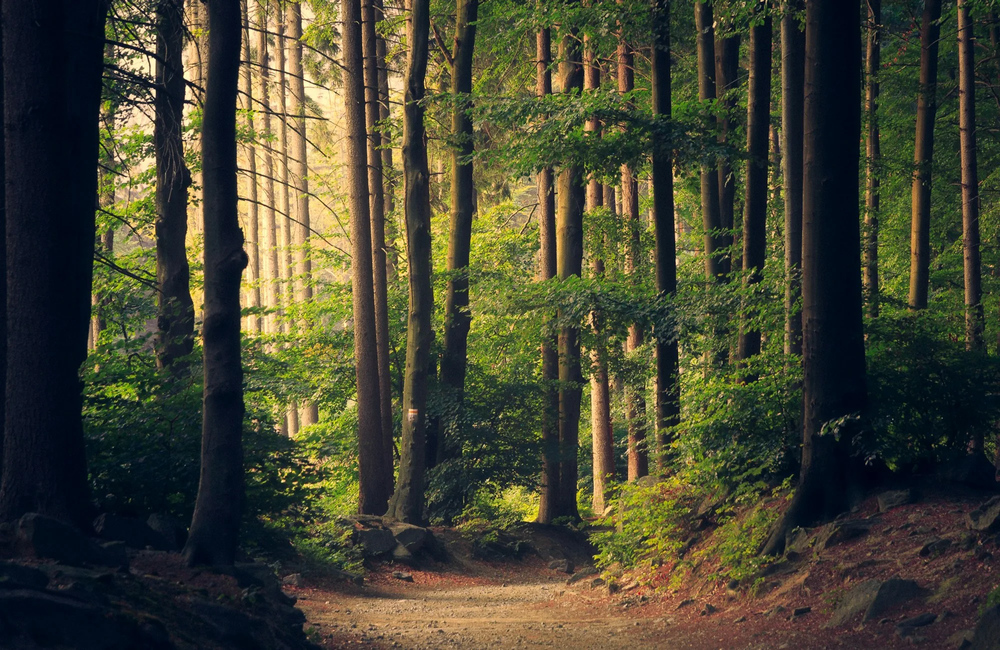
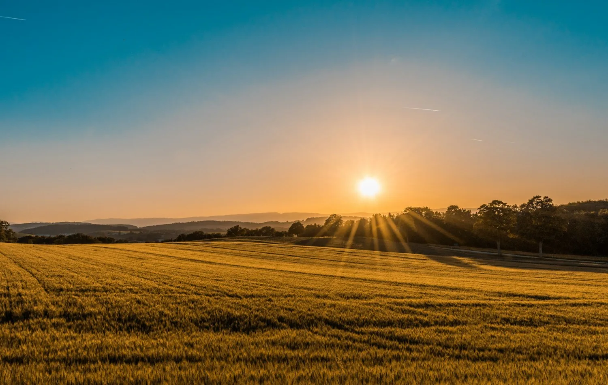
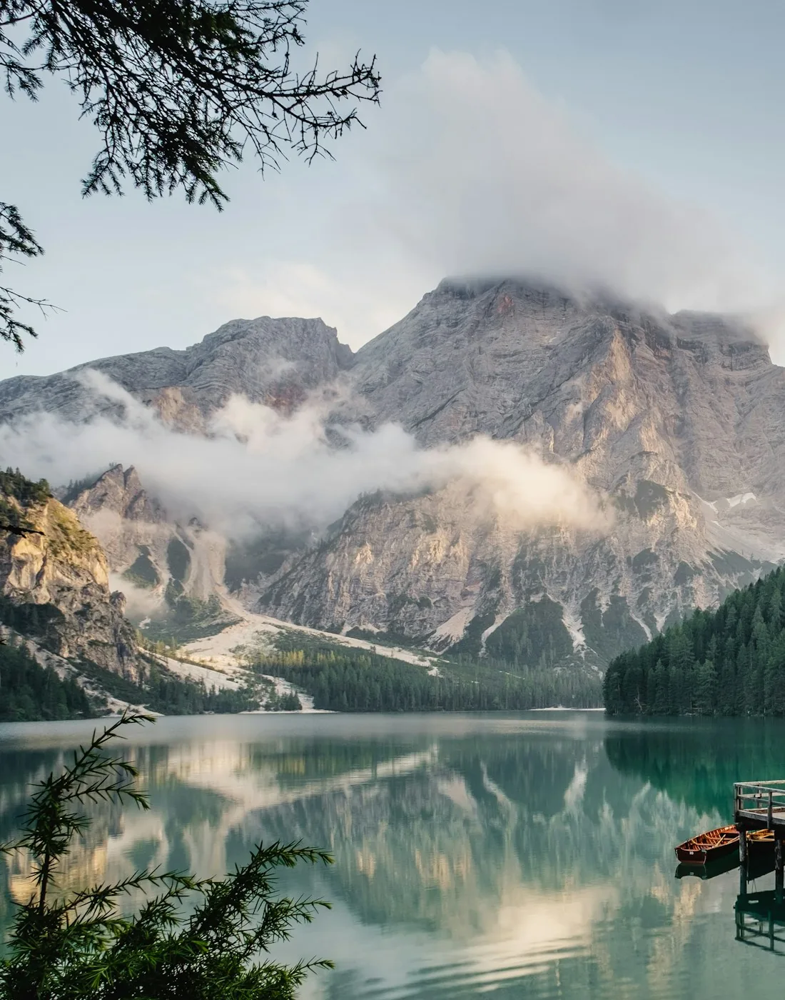
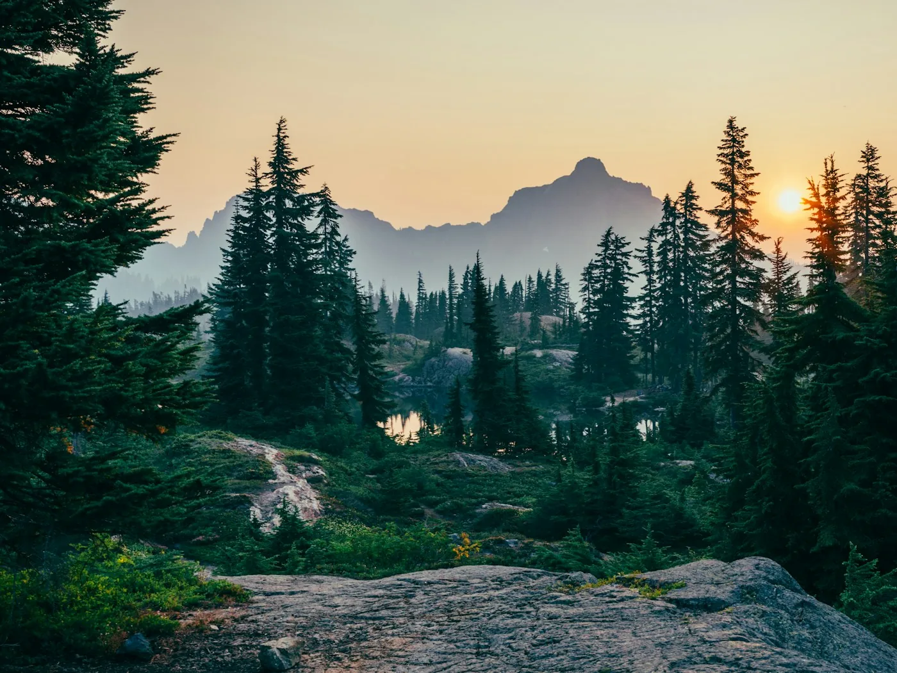
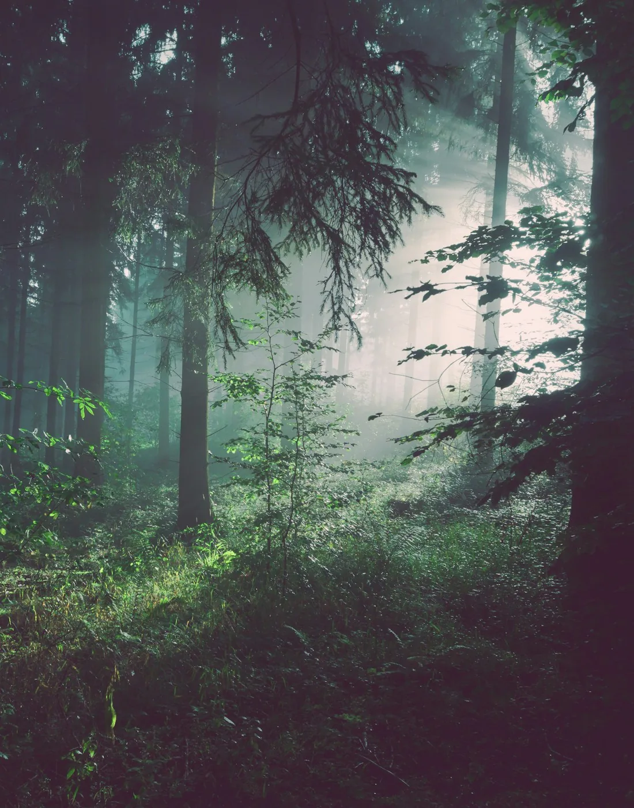

RAMOVERDE · SERVIZI PER IL VERDE
Il verde
prende spazio.
Immagine di riferimento · Unsplash
LA CURA DEL PAESAGGIO
Ogni spazio verde
ha il suo ritmo.
RamoVerde si occupa della manutenzione di giardini e aree verdi. Gli interventi vengono definiti in base al luogo, alle piante presenti e alle necessità di chi lo vive.
Uno sguardo all’approccioAMBITI DI INTERVENTO
Lavorare con
il paesaggio.
Le attività si adattano alle caratteristiche dell’area e alla richiesta. Il primo passo è conoscere lo spazio.


UN APPROCCIO ATTENTO AL LUOGO
02 / IL LAVOROPrima si
osserva.
Poi si interviene.
Una valutazione dell’area aiuta a capire le condizioni del verde e le attività richieste. Tempi e modalità vengono concordati a partire dal contesto.
- 01
Ascoltare la richiesta
Raccogliere le informazioni sul luogo e sulle esigenze.
- 02
Conoscere l’area
Valutare spazi, piante e accessi prima di definire il lavoro.
- 03
Concordare l’intervento
Definire attività e modalità in base alla valutazione.
RIFERIMENTI VISIVI
Trame, ombre
e cambi di luce.
Una selezione di immagini paesaggistiche come riferimento per questa proposta visiva. Non documenta interventi svolti da RamoVerde.

La manutenzione accompagna il carattere di un luogo.

Le fotografie sono moodboard visive da Unsplash, non esempi di lavori RamoVerde.
PARLIAMO DEL TUO SPAZIO
Da dove
cominciamo?
Per informazioni sui servizi o per descrivere un’area, contatta RamoVerde.
0577 160 7653Località San Marziale 11/13
Colle di Val d’Elsa, Toscana
Immagine di riferimento · Unsplash